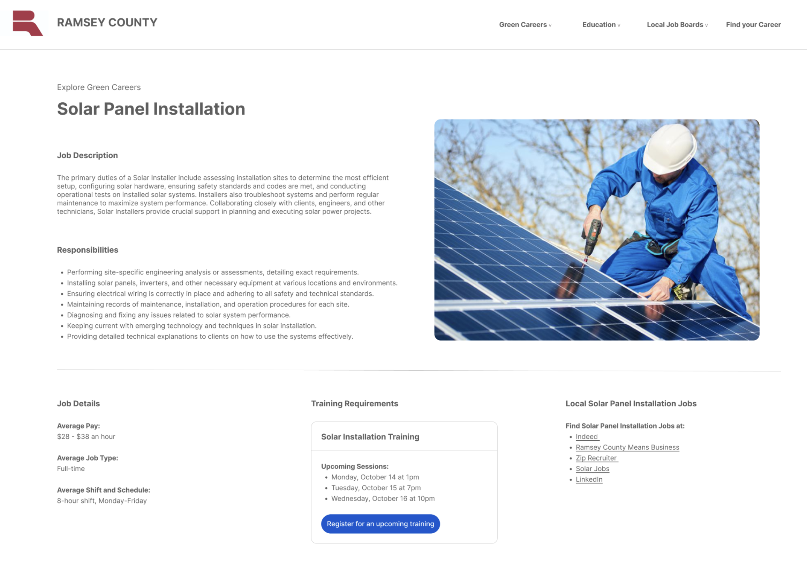
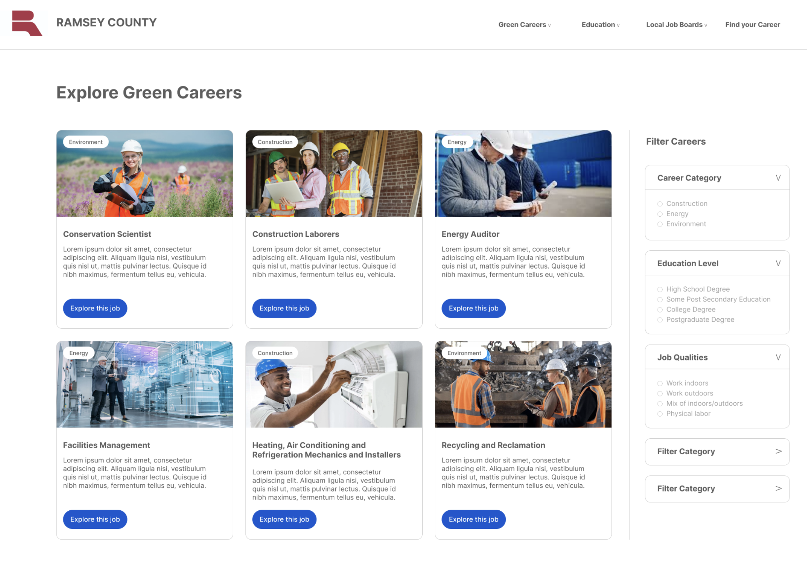

Climate resilience requires equitable access to quality green jobs. Saint Paul is making strides.
How the City of Saint Paul and Ramsey County are accelerating access to climate-resilient careers with TOPCities.
Written and visualized by Elham Ali
* Pseudonyms are used throughout.
Tamara*—a Black woman from the City of Saint Paul, Minnesota—hoped to build a career in sheet metal work, a field she trained for extensively. Despite her qualifications, at 47, she found herself laying tile, filling a job that didn’t feel like a career path.
“Tile was my last choice,” she admitted, “but it’s what was open.”
She had seen friends, especially people of color like herself, set their sights on skilled green trades, only to be funneled into less desirable roles, where career paths felt like dead-ends.
“I know I might be ‘filling a quota’—I’ve experienced it personally,” she shared.
While she saw efforts to bring diversity into the trades, Tamara faced the harsh realities of gender and race-based barriers that dictated where her career could start—and end. The lack of true upward mobility only deepened her frustration.
To address the challenges faced by Tamara and many others, Saint Paul and Ramsey County joined TOPCities, a program co-led by the Beeck Center for Social Impact + Innovation at Georgetown University and the Centre for Public Impact, partnering with Google.org and Goodwill-Easter Seals to co-design a digital tool connecting local job seekers to green careers. Using human-centered design, the project gathered insights from focus groups and interviews with about 30 job seekers—mainly BIPOC residents—and surveyed local employers to identify barriers and co-create solutions that meet the needs of both groups.
Tamara’s experience echoes a broader national trend. As climate change intensifies, demand for green jobs roles in renewable energy, energy efficiency, and green construction—is growing rapidly, especially in places like Saint Paul. These jobs present new paths for economic growth and wealth-building, particularly for communities facing high environmental risks.
Minnesota recently reached a record 62,102 clean energy jobs, fueled by a national $446 million investment from federal initiatives like the Bipartisan Infrastructure Law (BIL) and the Inflation Reduction Act (IRA). An expected six-percent job growth in Minnesota in 2024 will support infrastructure renewal, climate resilience, and environmental justice, with Minnesota’s clean energy companies adding jobs nearly five times faster than the overall economy.
Compared to other industries, green jobs are high quality and pay more than the national average. Many require only a high school diploma and offer hands-on learning through apprenticeships and internships. For instance, wind turbine technicians and water treatment operators often hold just a high school diploma, making these roles accessible pathways to well-paying careers.
Many high-quality green jobs offer wages up to 19 percent above the national mean, with Saint Paul’s energy efficiency roles among the most lucrative. In the Minneapolis-Saint Paul region, on average, green jobs pay significantly more than non-green jobs—about $7,369 more annually, with a mean wage of $84,562 per year.
Missing faces in green jobs
Despite demand, these roles—seen as engines for economic resilience and climate action—remain predominantly white and male, with more than 60 percent of clean energy roles held by non-Latin white workers. Black, Latin, and female workers remain underrepresented, excluding many from communities most affected by climate change—low-income, BIPOC, young, rural, and immigrant populations. Women make up only 30 percent of the clean energy workforce.
As one focus group participant described, “They test employees in the construction culture… out of seven women hired, most did not pass the physical test. It is very hard.” Ongoing pay inequities and limited advancement opportunities persist, with another participant noting, “Gender plays a role, as women are paid less. Women in construction are still rare—seeing more, but only a handful. There are barriers and gender expectations, especially for someone of color.”
In Saint Paul, women make up over half the population but are significantly underrepresented in mid- and high-quality green jobs, like renewable energy and construction. Instead, many find themselves in low-quality roles—if they enter the green sector at all.
With over 41% of Saint Paul residents identifying as people of color, BIPOC communities are still notably absent from high-quality green jobs. Black individuals, nearly 16% of the population, are overrepresented in low-quality roles.
43% of Saint Paul residents over 25 have a bachelor’s degree—higher the national average—but this distribution is uneven. A number of high-quality green jobs, like mechanical engineers, still demand advanced degrees, leaving those with only a high school diploma or vocational training at a disadvantage.
Focus group insights revealed that a bachelor’s degree is frequently seen as a minimum requirement for higher-paying jobs in sectors like energy efficiency. “Not everybody will have the education to be ready,” explained one participant.
Employers, too, recognize these gaps. According to Ramsey County’s employer survey, hiring practices often favor roles like machine operators and technicians, prioritizing technical skills. While some employers are open to candidates without degrees, they still look for hands-on experience and problem-solving abilities—qualities that can be difficult to demonstrate without industry exposure. “A degree can be useful, but it is not necessary to get hired or promoted within our field,” one employer noted. However, many still prefer candidates with technical certifications, creating barriers for those with general qualifications.
To support retention, companies invest in upskilling, mentorship programs, and tuition reimbursement. Still, significant entry barriers persist for individuals lacking formal credentials or relevant experience.
Barriers to entry
Access to green jobs in Saint Paul is shaped by a complex web of systemic, educational, and economic factors. Despite growing opportunities, historical legacies, entrenched inequities, and recruitment practices keep many qualified candidates out of high-quality green roles.
Educational barriers from childhood to career
Various high-quality green jobs—such as sustainability manager or environmental educator—often demand advanced degrees like a four-year college degree or certifications, yet disparities in education access limit high-skill opportunities for many. Inequitable early childhood education in Minnesota has created some of the nation’s largest racial disparities in educational outcomes, leaving many students of color unprepared for high-skill careers. Investments in K-12 schooling yield high social returns. As one participant shared, “Everyone might not have the education that others get, so it might not be as easy for others to understand.”
Students from low-income, predominantly BIPOC high schools often need remedial coursework in college, face extended graduation times, or drop out before completing their degrees. White students in Minnesota continue to achieve higher test scores and graduation rates, setting the stage for future gaps in career paths. These early educational barriers push many students of color toward lower-quality roles, ultimately restricting their green economy opportunities.
Lack of awareness and knowledge
Limited awareness of green career paths is another barrier. As Kim, a 33-year-old carpentry graduate, noted, “People don’t know where to start; they feel like there aren’t opportunities, and they don’t know where to look.” Many job seekers struggle to navigate essential tools like online platforms and job fairs. This lack of clear pathways, combined with limited training options, leaves many job seekers unable to leverage their skills in a rapidly evolving job market.
TOPCities research revealed that job boards often overlook green roles and lack details on skills, pathways, and local training. For newcomers, unfamiliarity with platforms like Indeed and LinkedIn further complicates access. National platforms rarely connect job seekers to local resources, training providers, or support organizations, widening the gap. Employers struggle to recruit skilled labor and need support to connect job seekers to resources essential for navigating this field.
Redlining’s legacy
Redlining—discriminatory policies that restricted housing and services based on race—continue to limit job access, housing stability, and economic opportunities in Saint Paul. The destruction of central neighborhoods like Rondo, a historic Black area, for the construction of Interstate 94 has contributed to entrenched disparities, making stable employment and pathways to homeownership harder to attain. This wealth gap between white and non-white residents restricts access to higher-paying jobs that require educational investment and skill development.
Systemic barriers beyond qualifications
Discriminatory hiring practices and lack of job transparency further limit access for many residents, including those impacted by the criminal justice system. One participant shared, “In my past, I used to worry about criminal history and getting hired—certain crimes, race too.”
For those reentering the workforce after incarceration, the challenges are even greater, with limited opportunities to secure and maintain good employment. Practical challenges such as childcare and transportation make it even harder for some to access training or job openings in suburban areas.
Challenges for immigrants
For immigrants, language differences and cultural norms complicate entry into specialized green sectors. Nearly half of Minnesota’s people of color are foreign-born, compared to 1.9 percent of white Minnesotans. They contribute to Saint Paul’s diversity but also face unique hurdles. Lin, a 43-year-old with IT training, explained: “I went to school for A+ and Network+ and was excited to apply, but I’m worried about language barriers and whether I’ll fit in. So, I’ve held back from applying.” These challenges make entry and retention in stable roles harder, especially in fields that demand strong communication.
Underrepresentation fuels economic disparities
Barriers to green job access create a cycle where BIPOC individuals, especially Black residents, are often excluded from high-paying roles that could build financial stability and intergenerational wealth, even as climate resilience funding surges. This exclusion risks deepening socioeconomic inequalities, particularly as climate impacts continue to affect these communities the most.
Historic redlining concentrated poverty in certain areas and restricted economic mobility for people of color, lowering credit scores and increasing rents in affected neighborhoods. In Saint Paul, Black homeownership rates remain among the lowest in the nation, stifling wealth accumulation—a key path to financial security. Racial covenants relegated people of color to areas with fewer resources and lower property values. The result has been a sustained wealth gap between white residents and residents of color that would take an estimated 240 years to close at current rates, as property ownership and value appreciation have long been avenues for wealth building.
In Saint Paul, these patterns have pushed Black and Latin workers into central neighborhoods while industrial jobs shifted to suburban and exurban locations, driving up unemployment in these central areas. In rural settings, Native American college graduates on rural reservations face similar limited job opportunities and advancement paths.
The economic impact of these barriers appears starkly in wage disparities in Saint Paul. Across all green sectors and job quality categories, white workers have higher average wages than other racial groups. For example, while Asian workers in green construction earn closer to white peers, Black and Latin workers still earn significantly less, especially in high-quality green jobs that provide the most stability and benefits.
Without access to these high-paying roles, many communities of color miss opportunities to save for retirement, invest in homeownership, and provide for future generations—ultimately widening the wealth gap.
Building an equitable climate workforce
With support from pro bono technologists at Google.org, the City of Saint Paul and Ramsey County co-designed mockups of the Green Jobs Career Pathways Tool—a digital platform that tackles key barriers to green job access. This user-friendly tool connects job seekers to tailored climate-positive career pathways, outlines required skills and qualifications, and links them to local training resources and employers. The tool also considers varying digital literacy levels to help individuals with limited online job searching experience, and provides clear and concise information. The tool addresses various resident and employer needs including aspiring career entrants.
Liz Boyer, Saint Paul’s climate action coordinator, explained, “The TOPCities collaboration and development of a Career Pathways Tool are an exciting addition to this work. These initiatives will help to provide clear, accessible career paths for job seekers and connections to local support while also helping local businesses find the talent they need to meet the growing demand for clean energy solutions.”
Beyond TOPCities, Saint Paul’s Climate Action and Resilience Plan promotes equitable access to clean energy careers for BIPOC communities. “Addressing the underrepresentation of women and BIPOC individuals in high-quality clean energy jobs is critical to achieving a just transition to a sustainable future,” said Boyer.
Ramsey County’s Climate Equity Action Plan also prioritizes BIPOC representation in green construction and clean energy. “Roughly 85 percent of participants in our green construction and HVAC programs are non-white,” shared Rachael Molenaar, interim planning manager at Ramsey County.
To foster a diverse workforce, Ramsey County’s Workforce Innovation Board launched resources like Job Connect, a free job board, the Inclusive Hiring Connections Summit, and the Inclusive Employer Toolkit to guide companies in building a diverse workforce. As John O’Phelan, planning specialist II at Ramsey County Workforce Equity & Contracting Inclusion, emphasized, “These tools are helping employers across sectors build and retain a more diverse workforce, aligning with our broader goals for an inclusive green economy.”
The tool is currently undergoing testing to ensure it meets user needs before a full public launch. Future product development will feature “day-in-the-life” videos and secure endorsements from employers.
Image 1. Explore Green Careers page with jobs and training
Image 2. Detailed job page for Solar Panel Installation
Image 3. Green career exploration and filter categories
Looking ahead, both Saint Paul and Ramsey County are committed to scaling up these efforts by leveraging new federal funding through the Department of Energy’s (DOE) Good Job in Clean Energy Prize. Their vision is a more inclusive, sustainable green economy that benefits all residents so that no community is left behind as they transition to a climate-resilient future.
Efforts extend beyond job seekers, with the tool designed to support employment counselors, school staff, parents, and others who guide individuals along new pathways into the clean energy sector. Ramsey County’s Workforce Innovation Board continues to lead this work. Their efforts are bolstered by initiatives such as the 12-month Inclusive Workplace Cohort, which supports small and mid-sized employers.
“The community research completed as a component of the TOPCities program will inform the work of the County as we move forward in seeking resources and funding to support BIPOC communities,” Molenaar emphasized.
Data was analyzed and visualized using R and Flourish. You can access the datasets in this Github repository.
This article was thoroughly researched and fact-checked to the best of our ability. If you spot any errors or have questions about the data, please email Elham Ali at elham.ali@georgetown.edu.
The Saint Paul analysis approach was inspired by the Urban Institute’s methodology for examining clean energy job access by race and gender.
Data sources:
- City of Saint Paul 2024 User Research Sprint: Collected data from local government, community organizations, residents, and employers involved in The Opportunity Project for Cities (TOPC) program.
- National Center for O*NET Development: Identified occupations in the green energy, construction, and renewables sectors requiring enhanced skills, with increased demand or new emergence.
- 2023 Occupational Employment and Wage Survey: Provided data on the total employment for these occupations.
- Urban Institute’s Job-Quality Scoring Method: Classified occupations using 11 elements of job quality.
- 2022 American Community Survey Public Use Microdata Sample (ACS PUMS): Analyzed access to green jobs by race/ethnicity, gender, education, and income.
- US Census Bureau’s 2022 QuickFacts Tool: Provided population data.
- Invest.gov’s Public Investments Data (as of January 2024): Used to calculate funding from the Bipartisan Infrastructure Law and Inflation Reduction Act for Saint Paul.
- Geocorr (Missouri Census Data Center): Mapped each Public Use Microdata Area (PUMA) to Saint Paul based on the proportion of the population within each PUMA that overlaps with the city. Combined with ACS PUMS replicate weights, this mapping determined the weight for each observation in the sample.